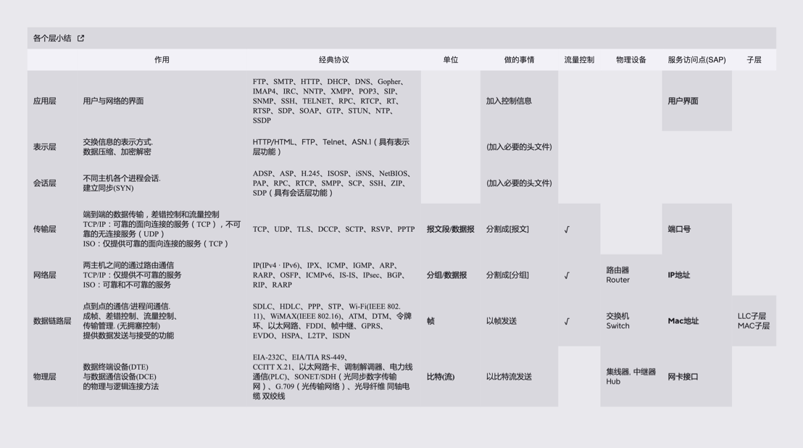
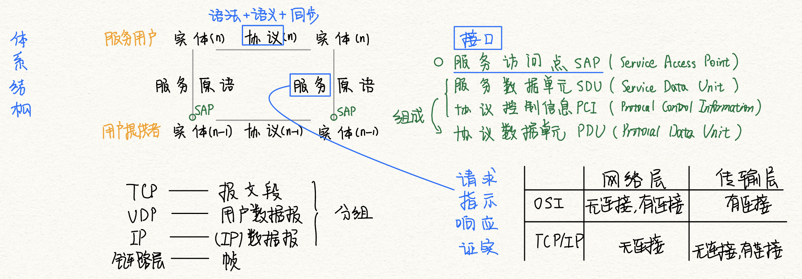

计算机网络体系结构
2022.07.09
[toc]
体系结构总结

物理媒介
传输信息所利用的一些物理媒体,如双绞线、光缆、无线信道等,并不在物理层协议之内而在物理层协议下面。因此,有人把物理媒体当作第0层。
物理层（Physical Layer）
- 传输单位：比特
- 任务：透明传输
- 定义内容：数据终端设备（DTE），数据通信设备（DCE），前两者的逻辑连接方法
- 标准：EIA-232C、EIA/TIA RS-449、CCITT的X.21
数据链路层（Data Link layer）
- 传输单位：帧
- 功能：成帧、差错检测、流量控制、传输管理
- 协议：SDLC->HDLC，SLIP->PPP，STP，帧中继
网络层（Network Layer）
- 传输单位：数据报
- 主要任务：IP到IP
- 功能：路由选择、流量控制、拥塞控制、差错控制、网际互联
- 协议：IP、IPX、ICMP、IGMP、ARP、RARP、OSPF
传输层（Transport Layer）
- 传输单位：报文段（TCP）、用户数据报（UDP）
- 只要任务：端到端
- 功能：复用和分用
会话层（Session Layer）
- 建立同步SYN
- 功能：建立管理与终止进程间的会话。利用校验点，使通信失效时恢复通信，实现数据同步。
表示层（Presentation Layer）
应用层（Application Layer）
FTP、SMTP、HTTP...
知识点小结

OSI与TCP-IP模型异同妙记：
OSI希望把什么都做好，在网络层的时候就做了有连接与无连接的功能，所以传输层就只做有连接的了。因为有无连接的区分已经在底层做好了。
TCP/IP在网络层只有IP，有无连接的功能都在传输层去做。